自动化验证基础｜期末复习
命题逻辑
等价公式
- 吸收律： 、
- 蕴含式等价：
- 等价式等价：
- $A \leftrightarrow B \Leftrightarrow (A\land B) \lor (\lnot A\land \lnot B) $
- $\lnot(A \leftrightarrow B) \Leftrightarrow A \leftrightarrow \lnot B $
真值表
| A | B | ||
|---|---|---|---|
| 0 | 0 | 1 | 1 |
| 0 | 1 | 1 | 0 |
| 1 | 0 | 0 | 0 |
| 1 | 1 | 1 | 1 |
合取范式 (CNF)和析取范式 (DNF)
- 合取范式：具有形如 形式的布尔逻辑公式
- 析取范式：具有形如 形式的布尔逻辑公式
- 主流的 SAT 求解器都是基于CNF输入
Tseitin 转换
-
Tseitin 算法是一个在线性时间内将命题公式转化为 CNF 范式的算法
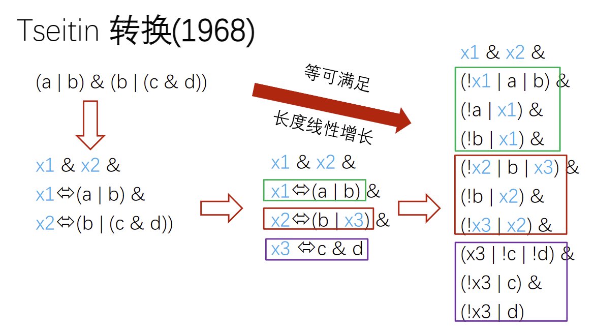
DPLL 算法
-
DPLL 算法，是一种完备的，基于回溯（backtracking）的搜索算法，用于判定命题逻辑公式（为合取范式形式）的可满足性，也就是求解 SAT（布尔可满足性问题）的一种（或者一类）算法。
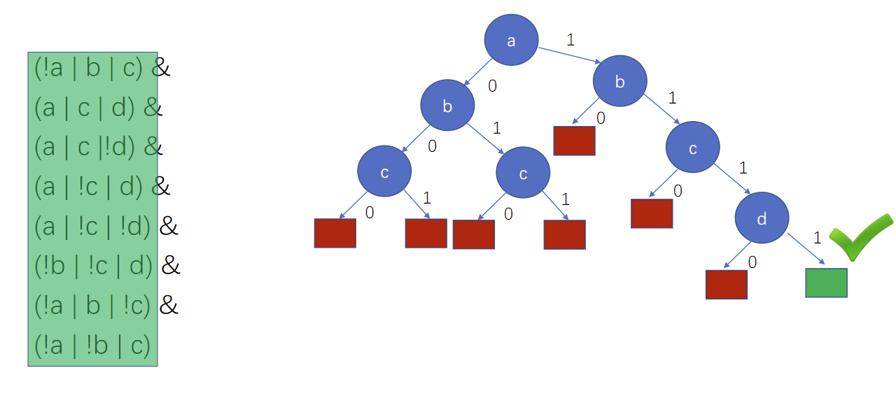
SAT 问题
- 给定一个布尔逻辑公式，判定其是否存在解的过程。
自动机
确定自动机与非确定自动机
一个有限自动机可以表示成五元组 𝐴 = (𝛴, 𝑆, 𝑇, I, 𝐹) ，其中
- 𝛴 表示字母表的集合
- 𝑆 表示状态的集合
- 𝑇: 𝑆 × 𝛴 → 𝑆表示迁移函数
- I ⊆ 𝑆 表示初始状态的集合
- 𝐹 ⊆ 𝑆 表示终止（接收）状态的集合
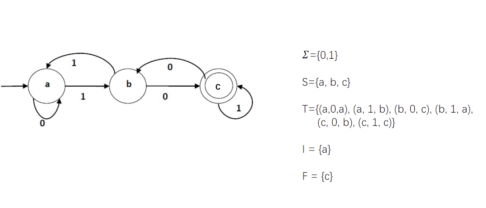
-
非确定自动机和确定自动机接收的语言没有不同
-
将非确定自动机转化为确定自动机：子集构造法
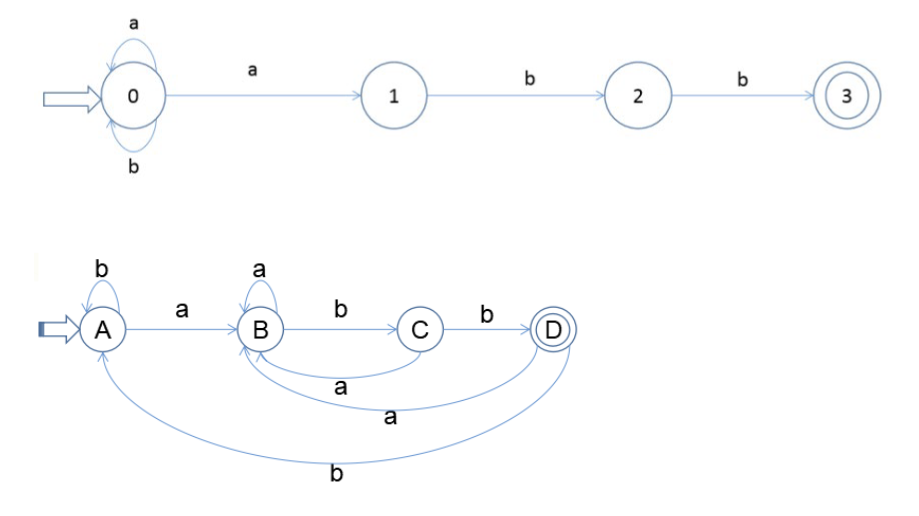
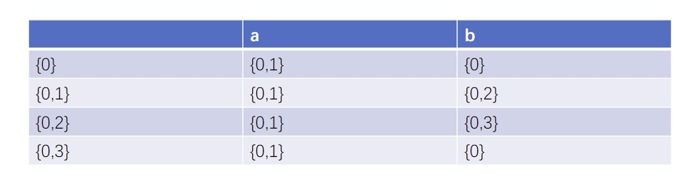
自动机相关操作
给定一个自动机𝐴，它能接收的所有字符串集合记为 L(A) 。L(A) 也称为 A 能接收的语言。
-
自动机取反
- 自动机取反是给定一个自动机 𝐴1，求另外一个自动机 𝐴2使得它们接收的语言互补，即 L(A1) ∩ L(A2) = ∅，并且 L(A1) ∪ L(A2) = 𝛴∗
- 流程：
- 给定一个自动机 𝐴，先求解对应的确定化自动机 𝐴d
- 将 Ad 中接收状态和非接收状态调换，其他保持不变，得到自动机 A’
- A’ 即为 A 的取反自动机
-
自动机的并（Union）
- 自动机求并是给定两个自动机 A1 和 A2 ，求另外一个自动机 A3 使得 L(A3) = L(A1) ∪ L(A2)
- 流程：给定两个自动机 A1、A2
- 将 A1 和 A2 的初始状态合并，其他保持不变，得到自动机 A3
- A3 即为所求自动机
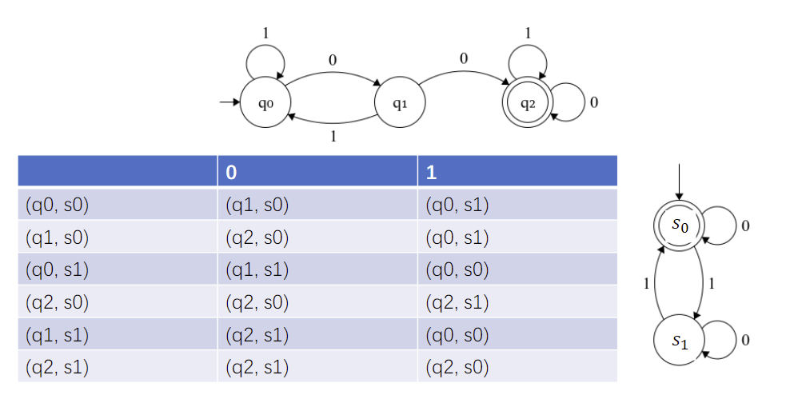
无限自动机（Infinite Automata）
- 状态是有限的
- 接收的字符串长度是无限的
buchi 自动机
buchi 自动机的语义：
- 有限自动机 A = (𝛴, 𝑆, 𝑇, 𝐼, 𝐹) 接收一组无限长度的字符串
- 一个字符串 𝜂 = a0a1… 可以被 A 接收当且仅当存在 𝜂 在 𝐴 上的一条运行轨迹，并且该轨迹无限次的经过 F 中的某个接收状态
- 𝐿(𝐴) 用来表示 A 可以接收的所有字符串的集合
不存在等价的确定 buchi 自动机
buchi 自动机的交
-
自动机求交是给定两个自动机 A1 和 A2 ，求另外一个自动机 A3 使得 L(A3) = L(A1) ∩ L(A2)
-
形式化写法为：
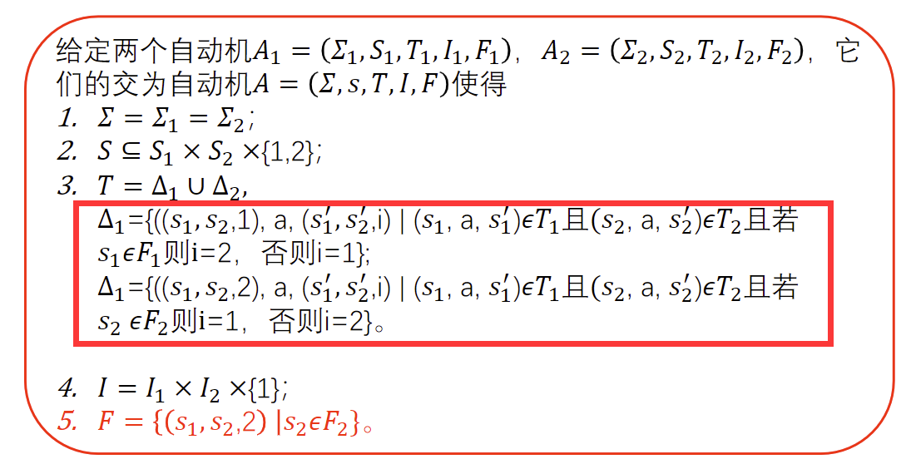
-
示例：
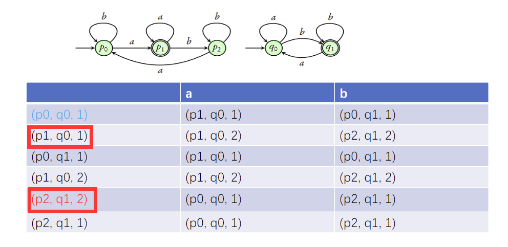
线性时态逻辑
非形式化语义
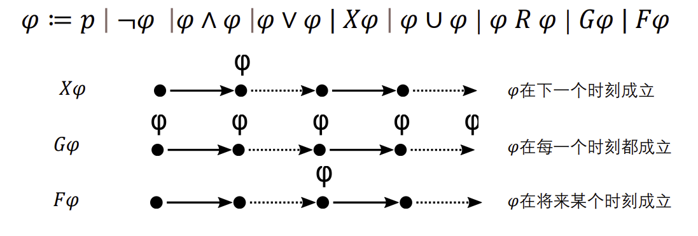
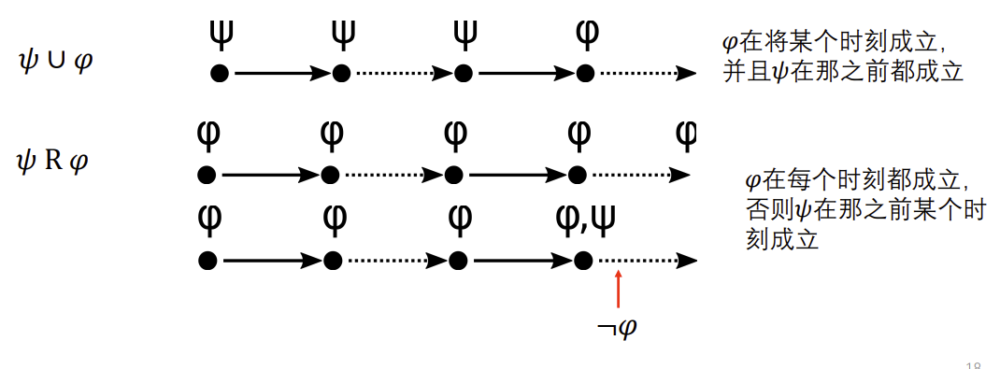
案例分析
- Something bad § never happens: G !p
- It is always the case that Something Good § eventually happens: G F p
- p happens infinitely often: G F p
- At some point, p will hold forever: F G p
- Every request is followed by a grant: G (req -> F grant)
- p oscillates every time step: G ((p -> X !p) & (!p -> X p))
可满足性
给定一个 LTL 公式 𝜑，是否存在一个无限序列使得 𝜎 ⊨ 𝜑 成立
LTL to BA
-
LTL = “a”
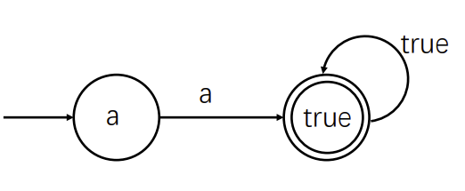
-
LTL = “X a”
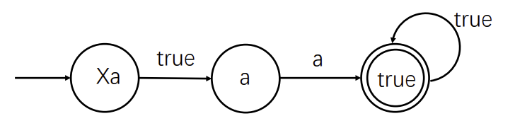
-
LTL = “F a”
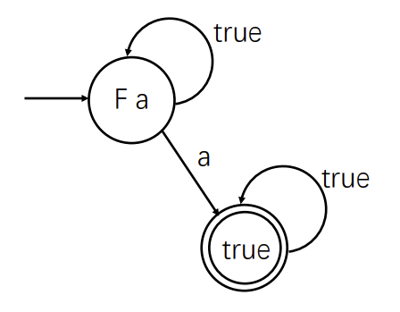
-
LTL = “G a”
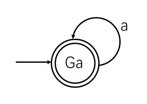
-
LTL = “a U b”
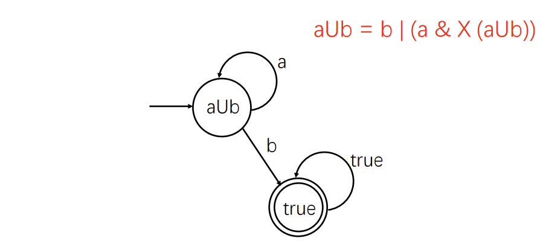
-
LTL = “a R b”
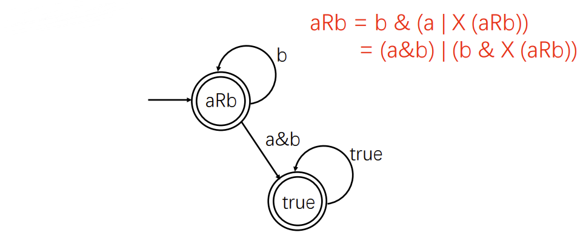
示例： LTL = “a U b & c U d”
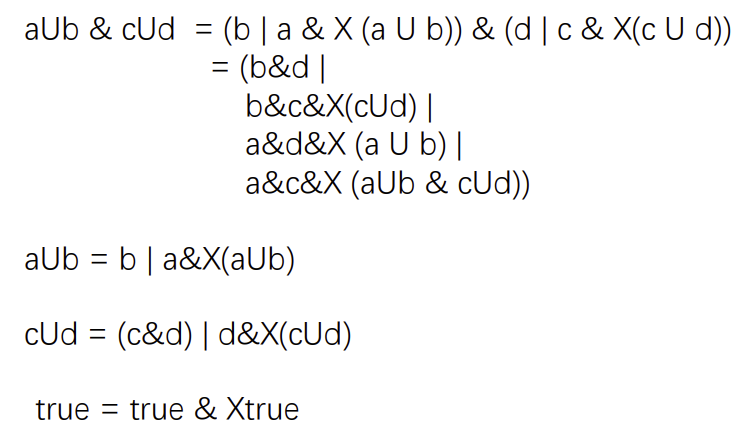
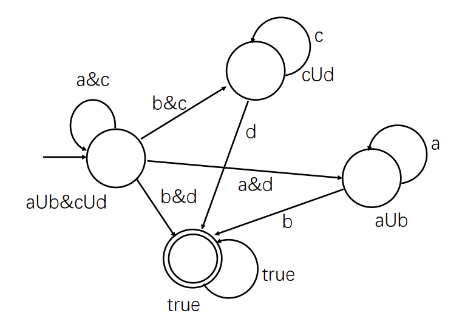
LTL 析取范式
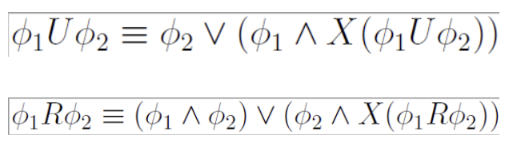
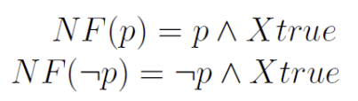
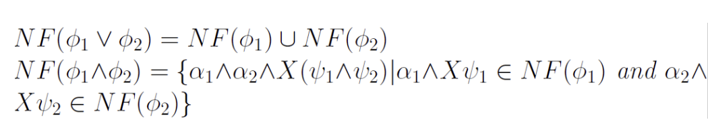
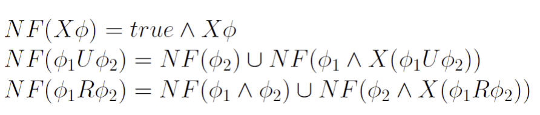
示例： LTL = “G (F a & F ! a)”
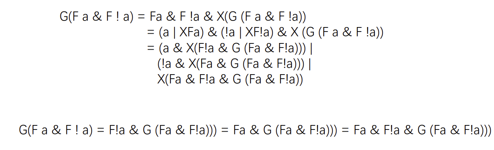
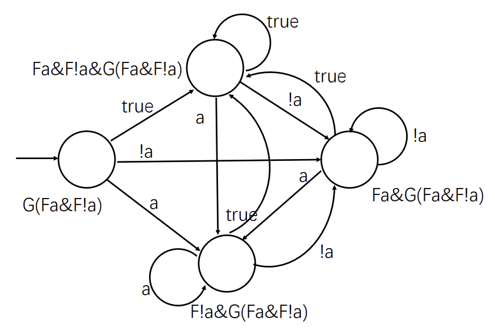
确定接收状态
- 不含 R 和 G 算子：true 状态
模型检查
形式化验证
- 将模型抽象成自动机
- 将规范取反并抽象成自动机
- 将模型和规范中得到的自动机求交
- 如果自动机的交没有可接收的序列，则通过验证
示例
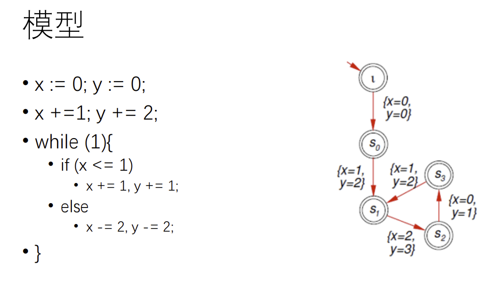
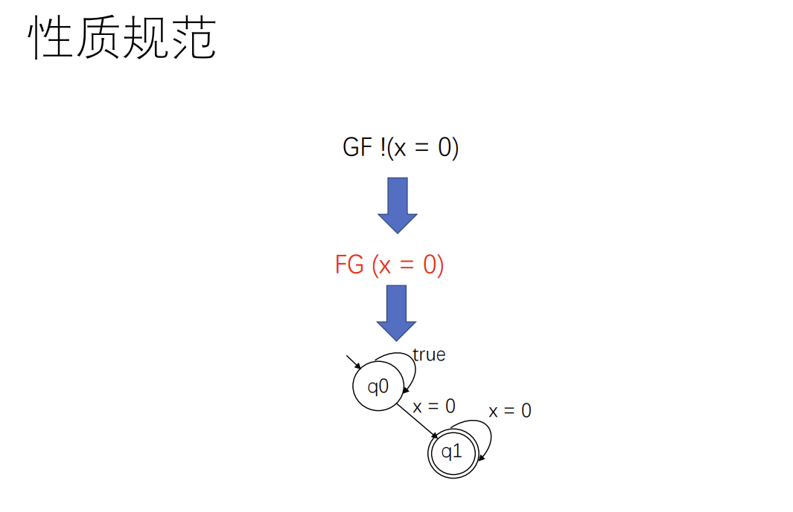
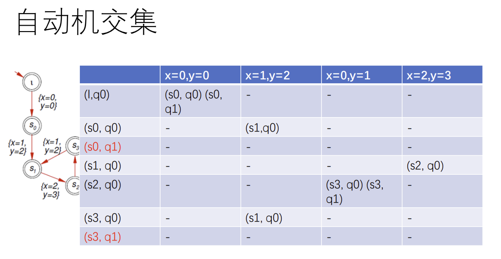
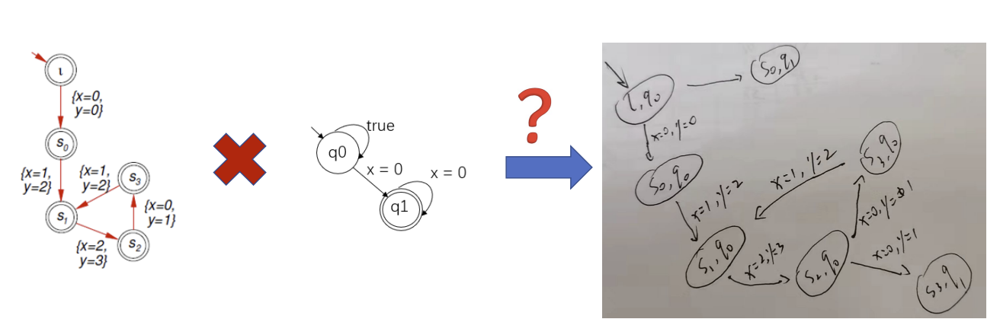
没有接收状态，因此不存在一个无限序列满足两个自动机的交
本博客所有文章除特别声明外，均采用 CC BY-SA 4.0 协议 ，转载请注明出处！